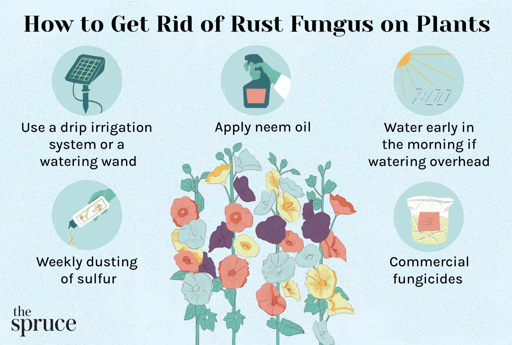
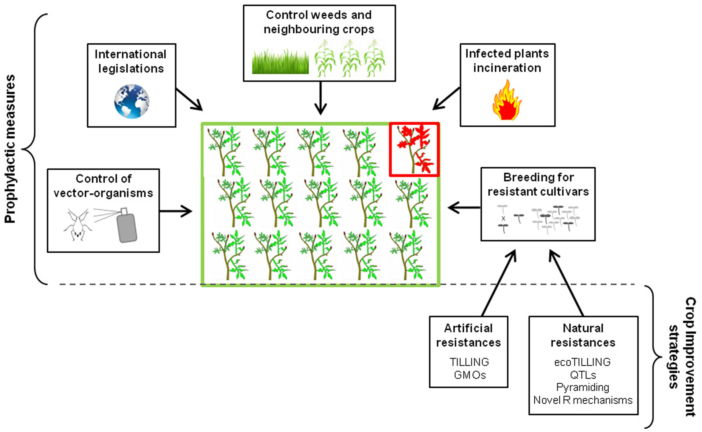
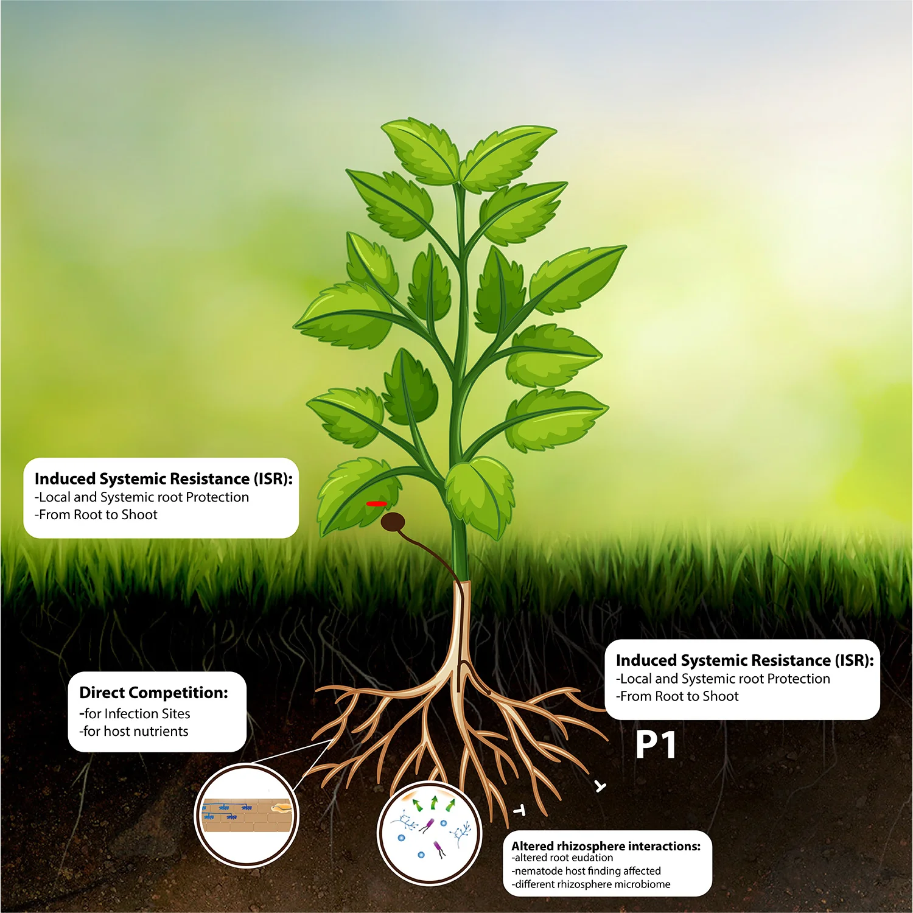

1. Fungal Diseases Preventions
Powdery Mildew:
This fungal disease affects many crops, including cereals, vegetables, and fruits. It is characterized by the appearance of white, powdery spots on leaves, stems, and flowers. Over time,
the disease can lead to leaf damage, reduced photosynthesis, and stunted growth. In severe cases, the affected plants may die.
Rust Diseases:
Rust is caused by several species of fungi, most notably the wheat rust fungus (Puccinia spp.). This disease manifests as orange or red pustules on the leaves, stems, and seeds of plants. Rusts are highly contagious and can spread quickly,
leading to significant crop losses, especially in cereals like wheat and barley.
Fusarium Wilt:
This disease, caused by the Fusarium fungus, affects a wide range of crops, including tomatoes, bananas, and beans.
It causes yellowing and wilting of leaves, and eventually, the plant may die. The fungus attacks the vascular system of the plant, preventing it from taking up water and nutrients.

2. Bacterial Diseases Preventions
Bacterial Blight:
This disease is commonly found in rice, beans, and other legumes. It is caused by the bacteria Xanthomonas oryzae and Xanthomonas campestris. Symptoms include water-soaked lesions on leaves that eventually turn brown,
leading to the destruction of the plant's vascular system. Bacterial blight can be spread through infected seeds, contaminated water, and wind.
Bacterial Spot:
Bacterial spot affects a variety of crops, including peppers, tomatoes, and stone fruits. It causes dark, sunken lesions on leaves, stems, and fruits.
As the disease progresses, the plant becomes weak, and fruit production is significantly reduced. This disease is typically spread by wind and rain, making it difficult to control.
Soft Rot:
Caused by the bacterium Erwinia spp., soft rot affects vegetables such as potatoes, carrots, and onions.
It leads to the breakdown of plant tissues, causing them to become mushy and foul-smelling. The bacteria thrive in moist, low-oxygen conditions, making it a serious problem in storage facilities.
3. Viral Diseases Preventions
Tobacco Mosaic Virus (TMV):
One of the most well-known plant viruses, TMV infects a wide range of plants, including tomatoes, peppers, and tobacco. The virus causes mottling, yellowing, and curling of leaves. It can severely affect crop yields and quality, particularly in high-value crops like tomatoes.
Cucumber Mosaic Virus (CMV):
CMV is transmitted by aphids and affects a broad spectrum of crops, including cucumbers, peppers, and melons. Infected plants show symptoms such as stunted growth, yellowing of leaves, and distorted fruits. The virus can also reduce the quality of harvested produce.
Cassava Mosaic Disease:
This viral disease, transmitted by whiteflies, is particularly devastating to cassava crops, which are a staple food for millions of people in tropical regions. Symptoms include leaf curling, yellowing, and a decrease in tuber yield. Cassava mosaic disease can lead to severe food shortages in areas where cassava is a major crop.

4. Nematode Diseases Preventions
Root Knot Nematode:
This nematode species, particularly Meloidogyne spp., is known for causing galls or "knots" on the roots of a wide range of crops, including tomatoes, potatoes, and cotton. Infected plants suffer from poor nutrient and water uptake, leading to stunted growth and reduced yields.
Nematodes:
Heterodera and Globodera species are responsible for causing cyst nematode infestations. These nematodes target crops like potatoes, soybeans, and beans. They attack the roots, causing the plants to wilt and lose vigor. Nematode infestations can be difficult to manage, as they often go unnoticed until significant damage has occurred.

5. Management and Control of Crop Diseases
Managing crop diseases involves a combination of preventive and corrective measures. Farmers use several strategies to reduce the impact of crop diseases, including:
Resistant Varieties:
One of the most effective ways to control crop diseases is through the use of resistant crop varieties. Many plant breeding programs have developed disease-resistant strains of crops, which can help prevent the spread of pathogens and reduce the need for chemical treatments.
Crop Rotation:
Rotating crops is an important cultural practice that helps break the disease cycle. By planting different crops in a field each season, farmers can reduce the buildup of pathogens that target specific crops.
Chemical Control:
Fungicides, bactericides, and nematicides are used to control crop diseases. However, the overuse of chemicals can lead to resistance, environmental pollution, and harm to beneficial organisms. Therefore, chemical control should be used in conjunction with other methods.
Biological Control:
The use of natural predators or beneficial microorganisms to control plant pathogens is an eco-friendly alternative to chemical control. For example, certain fungi or bacteria can be introduced to suppress harmful pathogens in the soil or on plant surfaces.
Proper Sanitation:
Maintaining clean farming equipment, using disease-free seeds, and removing infected plant material are critical in preventing the spread of crop diseases.